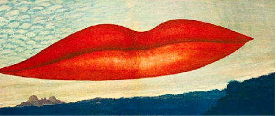

Het afzetten tegen de regels was ook
kenmerk uit de jaren 70. Jongeren be-
gonnen zich uitbundiger te kleden,
zetten zich af tegen het ouderlijk
gezag en deden waar zij zelf zin in
hadden. Ze kregen steeds meer in-
vloed op de maatschappij. Er ont-
stond een jeugdcultuur.
Éen van de modestijlen uit die tijd
was de punker stijl. Dit waren jonge-
ren die werden afgeschilderd als radi-
cale jongeren, dit kwam vooral door
de heftige kledingstukken die ze da-
gelijks droegen zoals lerenjassen met
spikes, gescheurde broeken en de
felgekleurde hanenkammen. Ook in
deze stroming, zetten de jongeren
zich af tegen het systeem met haar
eigen regels. Als je diep duikt in de
vele informatie die er te vinden is over
de punkers, hebben de punkers veel
van hun ideeën en opvattingen uit
een andere stroming gehaald, het da-
daïsme
Het dadaïsme is een kunststroming
die ontstaan is in 1916, en zich verder
heeft ontwikkeld in de jaren 20. Veel
kunstenaars waren woedend en ge-
frustreerd over de gevolgen die de
eerste wereldoorlog had nagelaten.
De kunstenaars in deze stroming
keerde zich door deze woede en frus-
tratie, tegen de normen en waarden
uit die tijd.
De Dadaïstische kunstwerken werden
antikunst genoemd, het was namelijk
een afzetting tegen de traditionele
kunst uit die tijd.
Na veel te hebben gezocht naar ver-
schillen en overeenkomsten, komt er
duidelijk uit dat er veel meer verschil-
len zijn en maar weinig overeenkom-
sten. Iets wat van het begin al opviel.
Maar het is toch verrassend om er-
achter te komen dat er één duidelijke
overeenkomst is uit deze twee perio-
des.
Het zich willen afzetten tegen het nor-
male uit die tijd, en dat met 50 jaar
verschil.

De Dadaïstische kunstwerken werden
antikunst genoemd, het was namelijk een
afzetting tegen de traditionele kunst uit
die tijd